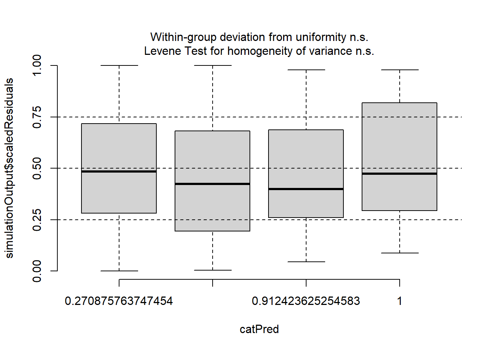
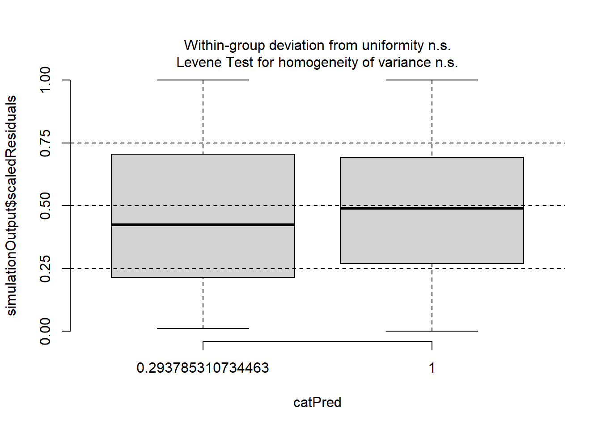
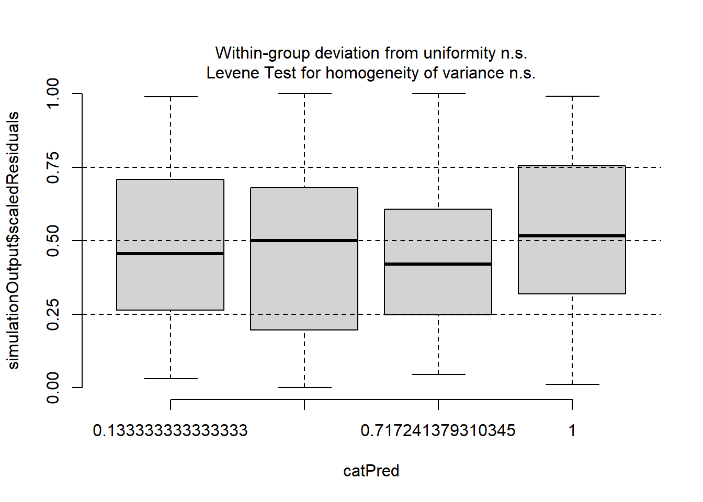

Warning: package 'tidyverse' was built under R version 4.4.2
Warning: package 'ggplot2' was built under R version 4.4.3
Warning: package 'tidyr' was built under R version 4.4.3
Warning: package 'purrr' was built under R version 4.4.3
── Attaching core tidyverse packages ──────────────────────── tidyverse 2.0.0 ──
✔ dplyr 1.1.4 ✔ readr 2.1.5
✔ forcats 1.0.0 ✔ stringr 1.5.1
✔ ggplot2 4.0.0 ✔ tibble 3.2.1
✔ lubridate 1.9.3 ✔ tidyr 1.3.1
✔ purrr 1.1.0
── Conflicts ────────────────────────────────────────── tidyverse_conflicts() ──
✖ dplyr::filter() masks stats::filter()
✖ dplyr::lag() masks stats::lag()
ℹ Use the conflicted package (<http://conflicted.r-lib.org/>) to force all conflicts to become errors
library(glmmTMB)
Warning: package 'glmmTMB' was built under R version 4.4.3
library(DHARMa)
Warning: package 'DHARMa' was built under R version 4.4.3
This is DHARMa 0.4.7. For overview type '?DHARMa'. For recent changes, type news(package = 'DHARMa')
library(sjPlot)
Warning: package 'sjPlot' was built under R version 4.4.3
Attaching package: 'sjPlot'
The following object is masked from 'package:ggplot2':
set_theme
Exercises
1. Fishing
These data (fish.csv) come from a survey of 250 groups that visited a state park. The dataset includes: - count: number of fish caught by the group - child: number of children in the group - persons: total number of people in the group - camper: 1 if the group brought a camper, 0 otherwise
Visualize the distribution of fish counts. What does the distribution look like?
Fit a Poisson and Negative Binomial model without zero-inflation to test how count is impacted by child, persons, and camper. Compare the models using AIC.
based on the AIC, the Negative Binomial model is a better performing model with lower AIC than a poisson model
nb_tmb <-glmmTMB(count ~ child + persons + camper, data = data, family = nbinom2)summary(nb_tmb)
Fit a zero-inflated Poisson model with child as the predictor of zero inflation. Interpret the zero-inflation part.
The ziformula uses a logistic regression model (binomial dist) to estimate the probability that an observation is from the zero-inflation process, which means it predicts whether an observation is an excess zero (i.e., zero from the zero-inflation process) or comes from the regular count-generating process. Setting it to ~1 assumes the zero-inflation is contant for all observations.
Plot residuals against child, camper, and persons. Are there any patterns?
# Simulate residualsres <-simulateResiduals(Zinb1)# Plot residuals vs predictorsplotResiduals(res, data$child, main ="Residuals vs Child")

plotResiduals(res, data$camper, main ="Residuals vs Camper")

plotResiduals(res, data$persons, main ="Residuals vs Persons")

What are your final conclusions about what drives fish count and zero-inflation in this dataset?
I think the number of child in the group counting the fish.
2. Squirrel behavior
For this exercise, you will consider the nuts data set (nuts.csv). These data were originally reported by Flaherty et al (2012). Researchers recorded information about squirrel behavior and forest attributes across various plots in Scotland’s Abernathy Forest. The study focused on the following variables:
cones = number of cones stripped by red squirrels per plot
sntrees = standardized number of trees per plot
sheight = standardized mean tree height per plot
scover = standardized percentage of canopy cover per plot
data2 <-read.csv("nuts.csv")
Fit and compare multiple count models:
Fit a Poisson model and a negative binomial model relating cones to sntrees, sheight, and scover.
the negative binomial is a better model based on lower AIC.
# Poisson modelpois_mod <-glmmTMB(cones ~ sntrees + sheight + scover, family = poisson, data = data2)# Negative Binomial modelnb_mod <-glmmTMB(cones ~ sntrees + sheight + scover, family = nbinom2, data = data2)
Fit zero-inflated versions of each, assuming constant zero-inflation (ziformula = ~1).
Plot and interpret the two best models. Explain how parameters differ between a zero-inflated model and the model without zero-inflation. What do the zero-inflation model coefficients mean?
the model fit for both model looks good without any deviation. the AIC between both model is slight different with ~1.5. shows that zero inflation doesnt have that much improvement on model performance compared to just negative binomial with any zero inflation.